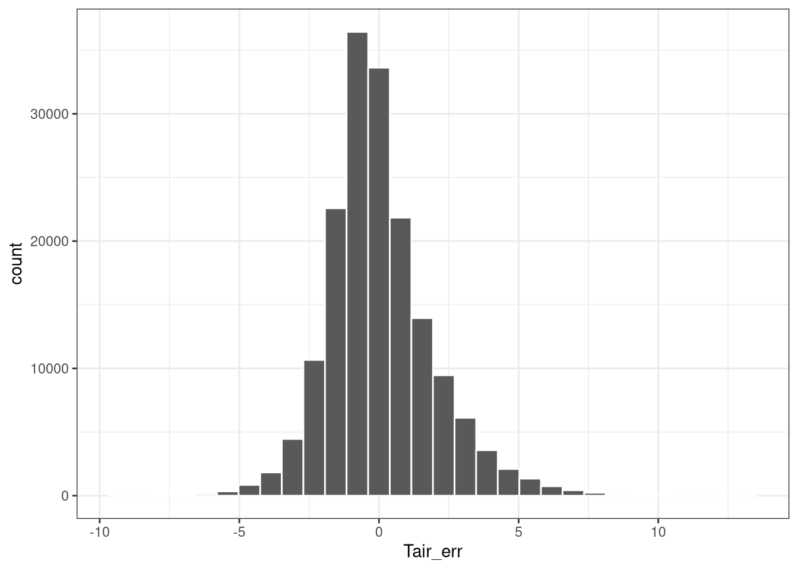
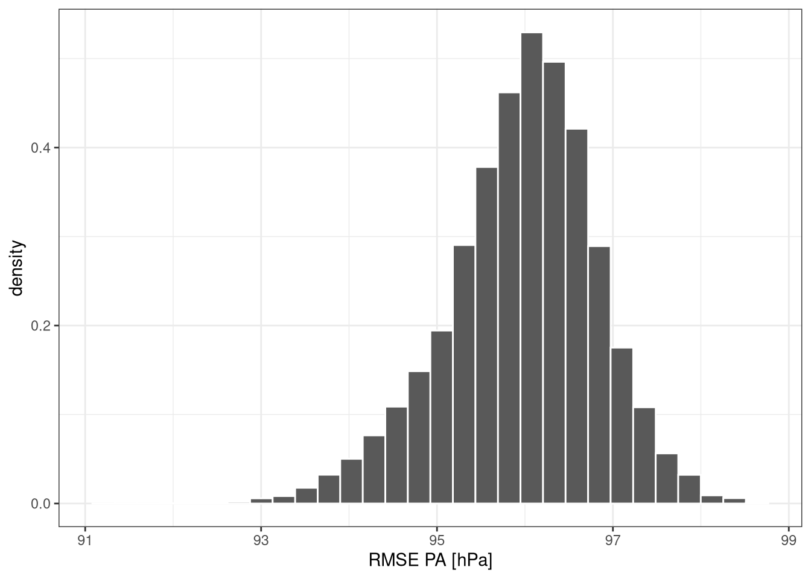
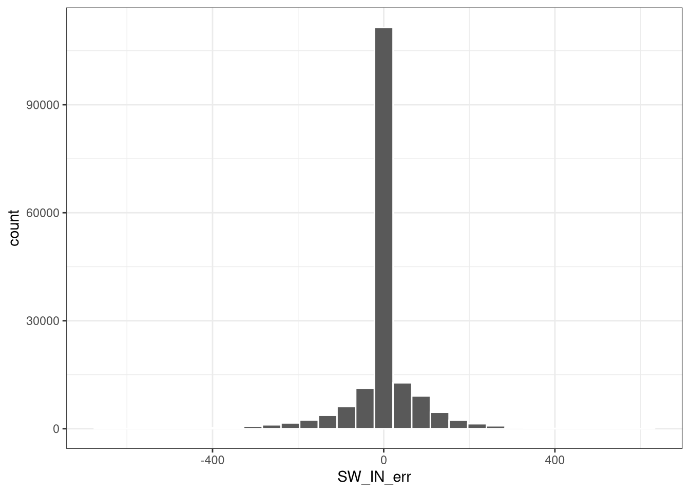
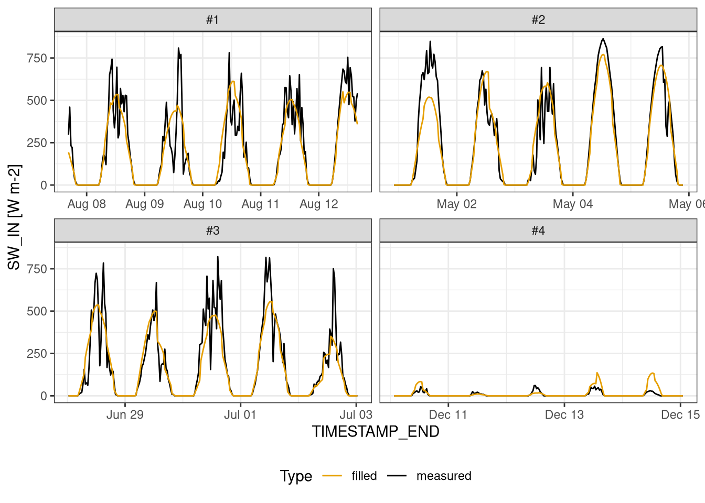
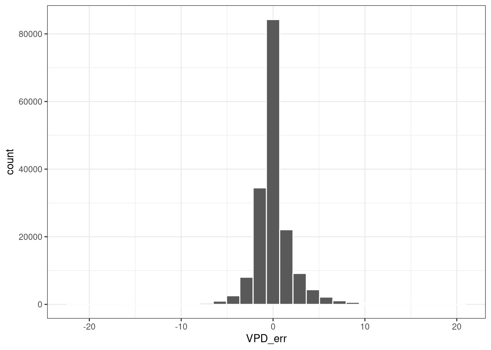
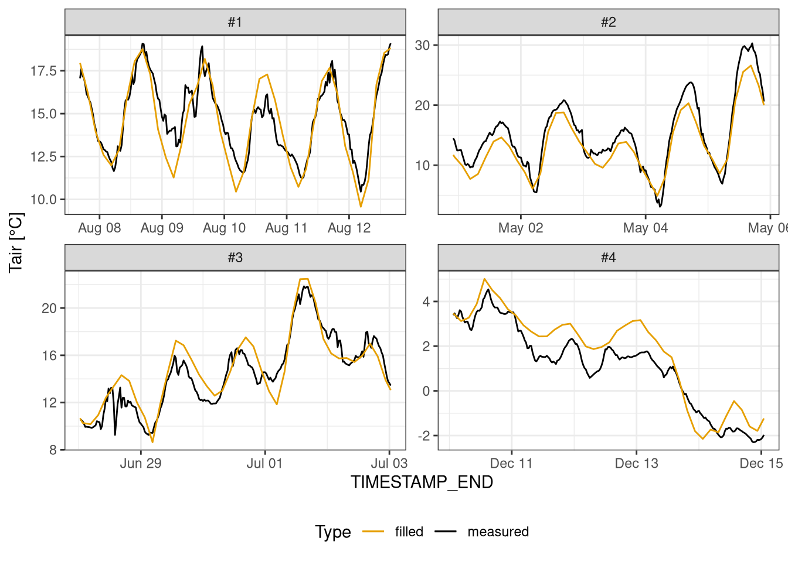
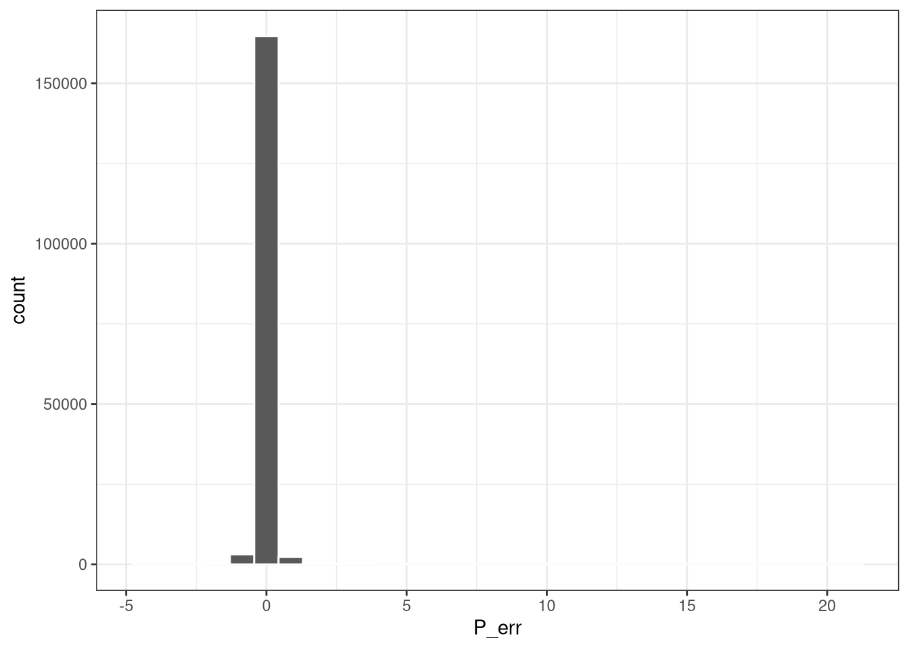
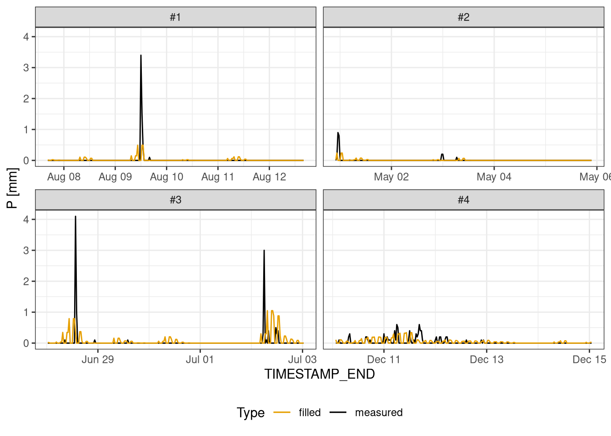
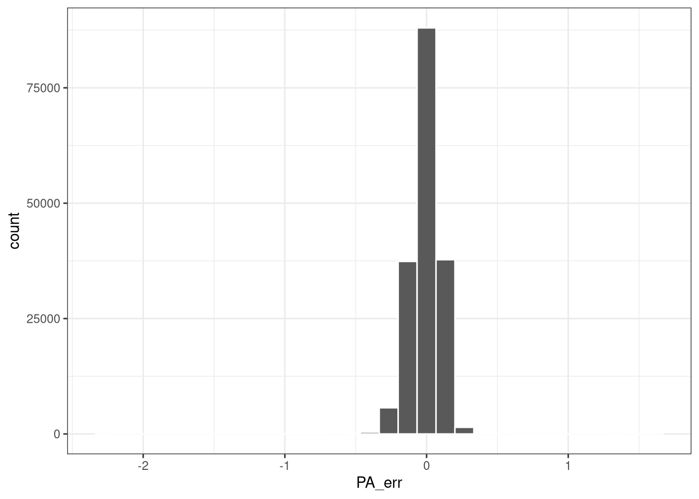
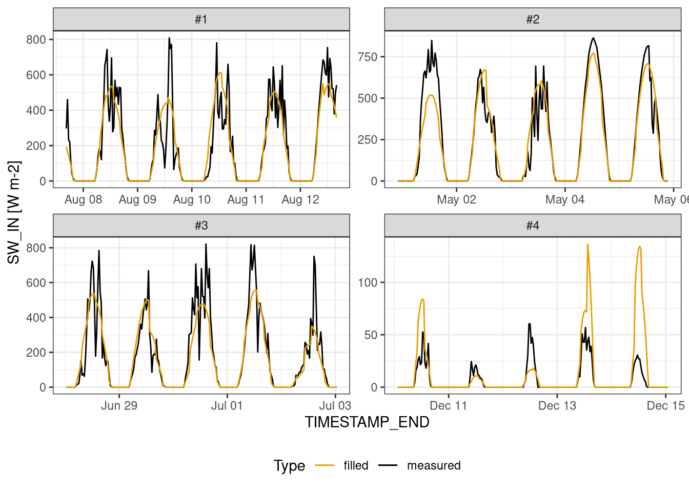

Last updated: 2022-07-03
Checks: 7 0
Knit directory: MeteoECGapFilling/
This reproducible R Markdown analysis was created with workflowr (version 1.7.0). The Checks tab describes the reproducibility checks that were applied when the results were created. The Past versions tab lists the development history.
Great! Since the R Markdown file has been committed to the Git repository, you know the exact version of the code that produced these results.
Great job! The global environment was empty. Objects defined in the global environment can affect the analysis in your R Markdown file in unknown ways. For reproduciblity it’s best to always run the code in an empty environment.
The command set.seed(20220628) was run prior to running the code in the R Markdown file. Setting a seed ensures that any results that rely on randomness, e.g. subsampling or permutations, are reproducible.
Great job! Recording the operating system, R version, and package versions is critical for reproducibility.
Nice! There were no cached chunks for this analysis, so you can be confident that you successfully produced the results during this run.
Great job! Using relative paths to the files within your workflowr project makes it easier to run your code on other machines.
Great! You are using Git for version control. Tracking code development and connecting the code version to the results is critical for reproducibility.
The results in this page were generated with repository version e23ff4a. See the Past versions tab to see a history of the changes made to the R Markdown and HTML files.
Note that you need to be careful to ensure that all relevant files for the analysis have been committed to Git prior to generating the results (you can use wflow_publish or wflow_git_commit). workflowr only checks the R Markdown file, but you know if there are other scripts or data files that it depends on. Below is the status of the Git repository when the results were generated:
Ignored files:
Ignored: .Rproj.user/
Untracked files:
Untracked: .idea/
Untracked: analysis/MDS_gap_filling_quality_Hyy.rmd
Untracked: cache/
Note that any generated files, e.g. HTML, png, CSS, etc., are not included in this status report because it is ok for generated content to have uncommitted changes.
These are the previous versions of the repository in which changes were made to the R Markdown (analysis/ERA_gap_filling_quality.rmd) and HTML (docs/ERA_gap_filling_quality.html) files. If you’ve configured a remote Git repository (see ?wflow_git_remote), click on the hyperlinks in the table below to view the files as they were in that past version.
| File | Version | Author | Date | Message |
|---|---|---|---|---|
| html | a2b35b6 | Simone Massaro | 2022-07-02 | Build site. |
| Rmd | 36fa014 | Simone Massaro | 2022-07-02 | Added timeseries comparison |
| html | 4ec3c99 | Simone Massaro | 2022-07-01 | Build site. |
| Rmd | a680f63 | Simone Massaro | 2022-07-01 | Plots for ERA Gap filling |
| html | e2a7d90 | Simone Massaro | 2022-06-29 | Build site. |
| Rmd | f480920 | Simone Massaro | 2022-06-29 | wflow_publish(c("analysis/index.Rmd", "analysis/ERA_gap_filling_quality.rmd")) |
| Rmd | d9c292a | Simone Massaro | 2022-06-29 | Refactored gap filling to also save the filled data series and not only the rmse |
| Rmd | c79c6c8 | Simone Massaro | 2022-06-29 | Host with GitHub. |
Variable distribution and details 🔗
| Error RMSE | 1.89 °C |

| Version | Author | Date |
|---|---|---|
| 4ec3c99 | Simone Massaro | 2022-07-01 |
Tair Measured vs ERA Downscaling using density plots.
| Version | Author | Date |
|---|---|---|
| 4ec3c99 | Simone Massaro | 2022-07-01 |

Variable distribution and details 🔗
| Error RMSE | 76.59 W m-2 |

| Version | Author | Date |
|---|---|---|
| 4ec3c99 | Simone Massaro | 2022-07-01 |
SW_IN Measured vs ERA Downscaling using density plots.
| Version | Author | Date |
|---|---|---|
| 4ec3c99 | Simone Massaro | 2022-07-01 |

| Version | Author | Date |
|---|---|---|
| a2b35b6 | Simone Massaro | 2022-07-02 |
Variable distribution and details 🔗
| Error RMSE | 2.08 hPa |

| Version | Author | Date |
|---|---|---|
| 4ec3c99 | Simone Massaro | 2022-07-01 |
VPD Measured vs ERA Downscaling using density plots.
| Version | Author | Date |
|---|---|---|
| 4ec3c99 | Simone Massaro | 2022-07-01 |

| Version | Author | Date |
|---|---|---|
| a2b35b6 | Simone Massaro | 2022-07-02 |
Variable distribution and details 🔗
| Error RMSE | 0.29 mm |

| Version | Author | Date |
|---|---|---|
| 4ec3c99 | Simone Massaro | 2022-07-01 |
P Measured vs ERA Downscaling using density plots.
| Version | Author | Date |
|---|---|---|
| 4ec3c99 | Simone Massaro | 2022-07-01 |

| Version | Author | Date |
|---|---|---|
| a2b35b6 | Simone Massaro | 2022-07-02 |
Variable distribution and details 🔗
| Error RMSE | 0.11 hPa |

| Version | Author | Date |
|---|---|---|
| 4ec3c99 | Simone Massaro | 2022-07-01 |
PA Measured vs ERA Downscaling using density plots.
| Version | Author | Date |
|---|---|---|
| 4ec3c99 | Simone Massaro | 2022-07-01 |

| Version | Author | Date |
|---|---|---|
| a2b35b6 | Simone Massaro | 2022-07-02 |
R version 4.1.3 (2022-03-10)
Platform: x86_64-redhat-linux-gnu (64-bit)
Running under: Fedora Linux 36 (Workstation Edition)
Matrix products: default
BLAS/LAPACK: /usr/lib64/libflexiblas.so.3.2
locale:
[1] LC_CTYPE=en_US.UTF-8 LC_NUMERIC=C
[3] LC_TIME=en_GB.UTF-8 LC_COLLATE=en_US.UTF-8
[5] LC_MONETARY=en_GB.UTF-8 LC_MESSAGES=en_US.UTF-8
[7] LC_PAPER=en_GB.UTF-8 LC_NAME=C
[9] LC_ADDRESS=C LC_TELEPHONE=C
[11] LC_MEASUREMENT=en_GB.UTF-8 LC_IDENTIFICATION=C
attached base packages:
[1] stats graphics grDevices utils datasets methods base
other attached packages:
[1] MeteoECGapFilling_0.0.0.9000 xfun_0.30
[3] lubridate_1.8.0 Metrics_0.1.4
[5] forcats_0.5.1 stringr_1.4.0
[7] dplyr_1.0.9 purrr_0.3.4
[9] readr_2.1.2 tidyr_1.2.0
[11] tibble_3.1.7 ggplot2_3.3.5
[13] tidyverse_1.3.1 workflowr_1.7.0
loaded via a namespace (and not attached):
[1] fs_1.5.2 usethis_2.1.6 bit64_4.0.5 devtools_2.4.3
[5] httr_1.4.2 rprojroot_2.0.3 tools_4.1.3 backports_1.4.1
[9] bslib_0.3.1 utf8_1.2.2 R6_2.5.1 DBI_1.1.2
[13] colorspace_2.0-3 withr_2.5.0 tidyselect_1.1.2 prettyunits_1.1.1
[17] processx_3.5.3 bit_4.0.4 compiler_4.1.3 git2r_0.30.1
[21] cli_3.3.0 rvest_1.0.2 xml2_1.3.3 desc_1.4.1
[25] labeling_0.4.2 sass_0.4.1 scales_1.2.0 hexbin_1.28.2
[29] DEoptimR_1.0-11 robustbase_0.95-0 callr_3.7.0 digest_0.6.29
[33] rmarkdown_2.13 pkgconfig_2.0.3 htmltools_0.5.2 scico_1.3.0
[37] sessioninfo_1.2.2 bigleaf_0.8.1 highr_0.9 dbplyr_2.1.1
[41] fastmap_1.1.0 ggthemes_4.2.4 rlang_1.0.3 readxl_1.4.0
[45] rstudioapi_0.13 farver_2.1.0 jquerylib_0.1.4 generics_0.1.2
[49] jsonlite_1.8.0 vroom_1.5.7 magrittr_2.0.3 Rcpp_1.0.8.3
[53] munsell_0.5.0 fansi_1.0.3 lifecycle_1.0.1 stringi_1.7.6
[57] whisker_0.4 yaml_2.3.5 brio_1.1.3 pkgbuild_1.3.1
[61] grid_4.1.3 parallel_4.1.3 promises_1.2.0.1 crayon_1.5.1
[65] lattice_0.20-45 haven_2.4.3 hms_1.1.1 knitr_1.38
[69] ps_1.6.0 pillar_1.7.0 pkgload_1.2.4 reprex_2.0.1
[73] glue_1.6.2 evaluate_0.15 getPass_0.2-2 REddyProc_1.3.2
[77] remotes_2.4.2 modelr_0.1.8 solartime_0.0.2 vctrs_0.4.1
[81] tzdb_0.3.0 httpuv_1.6.5 testthat_3.1.4 cellranger_1.1.0
[85] gtable_0.3.0 assertthat_0.2.1 cachem_1.0.6 broom_0.8.0
[89] later_1.3.0 memoise_2.0.1 ellipsis_0.3.2 here_1.0.1